Instagram: the ultimate social platform for millennials, brands, and content creators alike. Its means of visual storytelling has formed an online space of shared personal experiences, innovative ideas, and engaging creative ventures.
Veterans of the app would know all the tips, tricks, and marketing strategies to growing a unique, successful profile. But for those just starting out, where do you begin? How does one use Instagram and its wide range of user features?
Here at Socialfollow, we break down the basic functions of Instagram and how to optimize them for user growth.
How to Use Instagram: Navigating the App
Before diving into the creative, social aspects of Instagram, let’s first discuss the main elements that make up its structure.
Your Home Feed
Your Instagram home feed is the first page you see upon starting the app. This tab displays a real-time feed of content from all the users and hashtags you follow.
According to Instagram’s algorithm, the order of posts delivered on this feed are determined by the following factors:
- The date the content was posted
- The likelihood of your interest in the post
- Your interaction history with the original poster
This means that on top of showing you the most recent posts, Instagram also considers content you’ve previously engaged with and your closest user relationships on the app. Therefore, the first stream of content you see are likely from friends and family or the topics you care about most.
On top of users you already follow, you may also find content from suggested accounts relevant to your interests. Your home feed additionally delivers sponsored ads from brands and influencers, regardless of whether or not you follow them.
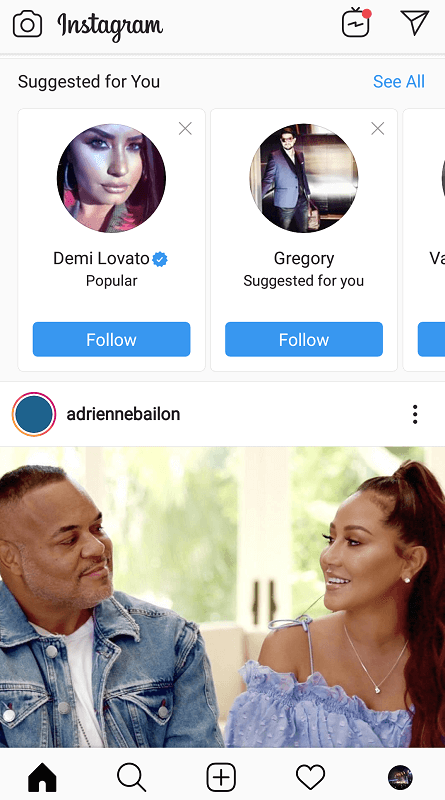
Along with standard Instagram posts, your home feed also displays the latest stories from those you follow. You’ll also find an icon on the upper right-hand corner that notifies you of any available direct messages.
The Explore Tab
Instagram’s “Explore” tab can be easily viewed by tapping on the magnifying glass icon next to your homepage button. This page not only allows you to search up other users; it’s also a feed comprised of posts catered to your interests, from accounts you’ve yet to follow.
Instagram pulls up this content based on posts liked by users whose content you do follow, posts by accounts similar to those you follow, and posts in your niche with the highest engagement.
Along with videos and images, the Explore tab also delivers stories from accounts you might like; along with stories in locations near you, top-trending live videos, and products for sale in your favourite communities.
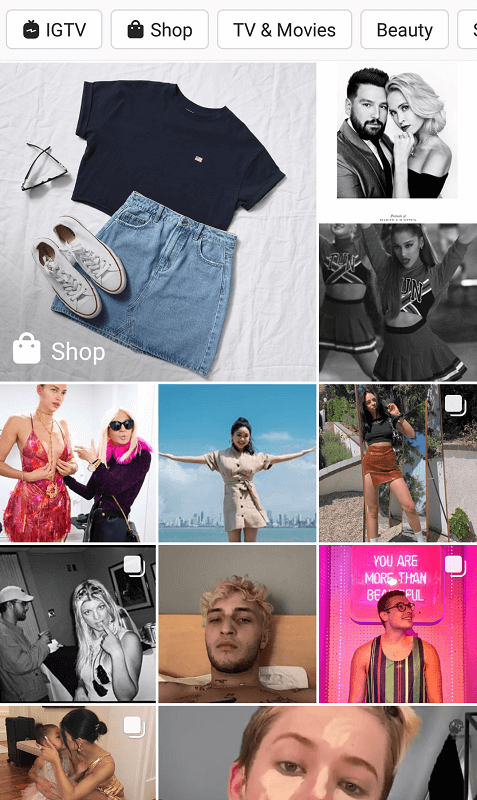
Since the Explore page is carefully curated to suit your interests, each user experiences a different feed of content.
To search for a specific user, topic, place, or hashtag, simply enter your keywords in the search bar provided at the top of the page.
Your Profile
Your profile is arguably the most important page on the Instagram app; the space where you get to showcase all of your creative ideas in the form of photos, videos, and stories.
This page also displays all the posts you’ve shared thus far, along with your current follower count and the number of users you follow.
Your Bio
Aside from your image feed, your bio is the first thing visitors see when stumbling upon your profile.
This section is generally used to describe yourself, your brand, and what you do. Given the 150-character limit, optimize this wisely. Get creative and try to engage your viewer off the bat – using emojis, your tagline, or showing off your sense of humour are good ways to start – enticing them to browse further down your profile.
Courtesy of willsmith (Instagram account).
Your bio section also allows you to add in your website, helping you further convert potential followers into clients or customers. For business profiles, you also have the option of leaving your e-mail address and promotions you’re currently running.
Your Grid
And now for the most important section on your profile: your grid.
Otherwise known as your Instagram feed, this section displays all the creative content you have to offer – from photos, to videos, to shoppable content. Users often establish a distinct theme or aesthetic to hook viewers in and keep them scrolling for more.
Courtesy of willsmith (Instagram account).
This aspect of your profile is what influences users to follow your account. The more quality content you display, the better likelihood you have of growing an audience.
Your feed also displays a tab for all the public posts you’re tagged in by other users.
Your Stories and Highlights
Stories are a fun, creative way of giving your followers fleeting content or personal updates (more on this feature down below). Lifted from the innovative functions of the Snapchat app, Instagram Stories have a 24-hour lifespan and provide real-time updates exclusively to those who follow you.
Once you upload a story, your profile picture will immediately display an orange-pink outline. This indicates that you currently have a live story (or stories) visible to your audience.
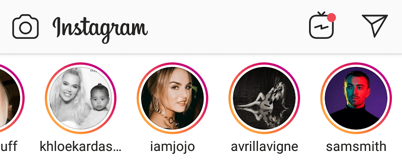
Though temporary, you may choose save specific stories as Highlights. These are small channels of saved, archived stories represented by circular icons underneath your bio (perfect for preserving any memories you wish to continue sharing with followers).
Courtesy of willsmith (Instagram account).
To save a story as a highlight, simply tap on the “Highlight” icon on your live story, and save it to the appropriate category.
You can do the same with older stories saved into your Stories Archive (found in your account settings).
Your Notifications
The final page on your Instagram app displays your notifications. These are viewed by tapping the heart icon next to your profile on the navigation panel.
When receiving new notifications, a red bubble appears above this icon – displaying any new comments, likes, or tags of your profile. Each of these are represented with their own symbol (a speech bubble for a new comment, a heart for a new like, and a person for a new tagged post); with a number indicating the amount received.
Courtesy of Classy.
To reply or view new comments, tap on the “Reply” option straight from your notifications page, or tap on the notification itself to view the whole comment on your post.
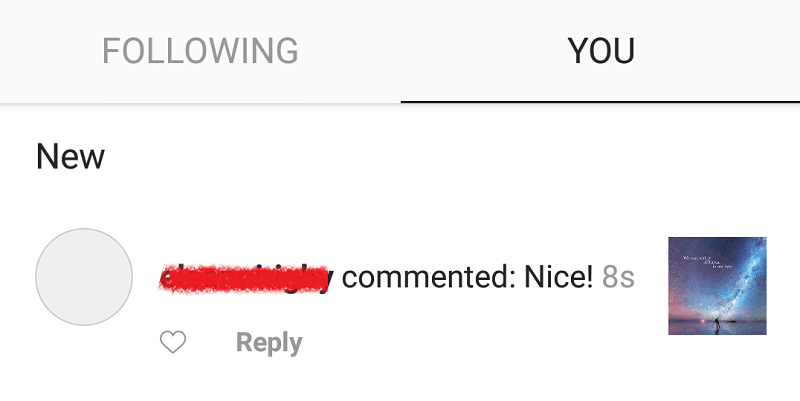
Your notifications also inform you of any unread direct messages. Tap on these to view them in your inbox.
How to Use Instagram: Interacting With the Community
Being a social platform, a vital part of Instagram culture is interacting with other users. These can be done in a variety of ways – some through simple communication tools, and others through more creative functions – as outlines below.
Leaving Likes, Comments, and Follows
“Likes” are pretty much Instagram’s currency – they determine the value and popularity of one’s content.
To leave a like on a post, simply tap the heart icon underneath the image or video, or double-tap on the post itself. This turns the icon red, indicating that you’ve liked the post.
Courtesy of noahschnapp (Instagram account).
For comments, tap the speech bubble icon next to the ‘like’ option. This directs you to the post’s comment thread where you can leave your thoughts on the user’s content. You can spice up your comment with emojis, hashtags, and even tag other users (directing them to the same post), if you wish.
To follow a user, you can easily tap the blue “Follow” option next to their username on a post, or tap on the blue “Follow” button displayed under their profile bio.

Courtesy of noahschnapp (Instagram account).
Leaving likes, comments, and follows on other people’s profiles is a crucial marketing method of connecting with others in your niche. Who knows – they may just engage back.
Sending Direct Messages
As mentioned previously, your home feed displays an paper airplane icon on the upper right-hand corner of your screen. This represents your Instagram inbox.
A number pops up on this icon notifying you of any new direct messages. To send one yourself, tap on the “Message” option underneath a user’s profile bio.

Enter your message, hit the “Send” button, and you’re done! Any replies you receive will appear as a notification on your inbox icon.
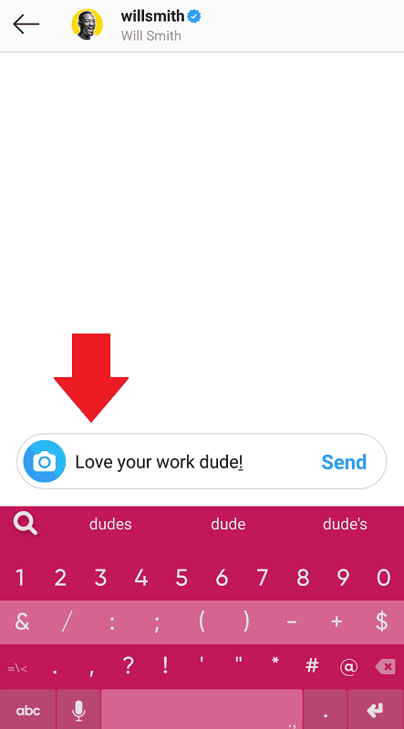
An alternative method of sending messages is to visit your inbox and select the “New Message” icon at the upper right-hand corner of your screen.

You’ll then be prompted to enter the user (or users) you wish to contact. Simply search for their profiles and add a blue tick next to their username. When you’re done, tap on “Chat”.
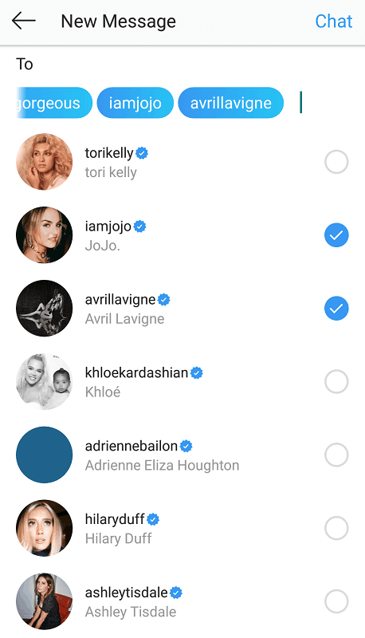
This then directs you to a new message thread with the other user. If multiple users are selected, this creates a new group chat.
Uploading Posts
And now for Instagram’s defining feature – its content.
Your posts define you as an influencer, brand, or business. This is where your creativity shines; the crucial practice that builds your reputation on the platform.
To upload a post on Instagram, select the square/plus icon at the center of your navigation panel.
This allows you to take a new picture or video, or select an existing one from your camera roll.
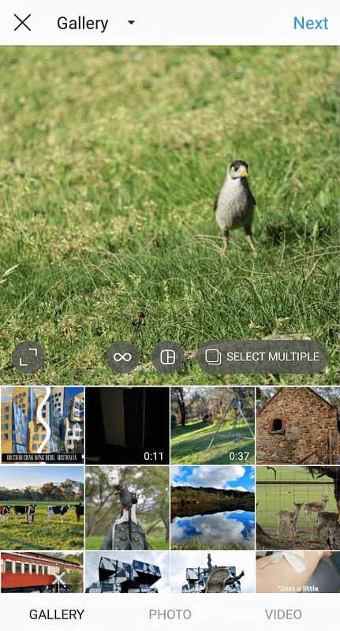
Once you’ve chosen your media, you can then add filters and edit the content to your liking. Instagram offers a wide assortment of unique, built-in filters, along with with a basic editing studio for any final touches.
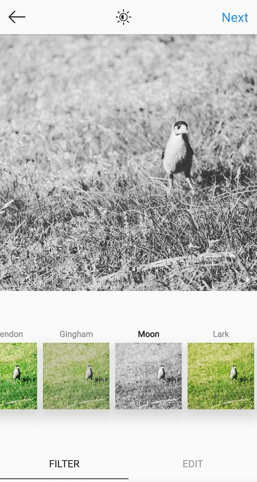
When you’re done, tap on “Next”. You can then write a caption to accompany your content. Users are recommended to write longer, meaningful captions; this prompts viewers to spend more time on your post, thus boosting engagement.
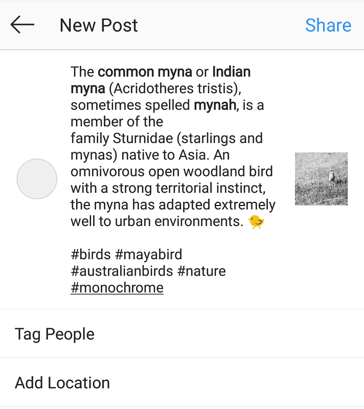
Using Hashtags, Geotags, and User Tags
To increase your post exposure, using the appropriate hashtags is highly recommend. These are terms or descriptive words that categorize your post in to the right niche, raising its visibility among your target audience.
For example, adding “#gameofthrones” in your caption can help get your post seen by other users (presumably, other Game of Thrones fans), who are browsing content through that tag themselves.
Tagging the appropriate location in your post also raises its discoverability among potential audiences in the same area. These “geotags” add your post to a stream of content coming from the same location; making it likely for other local users to stumble upon your work.
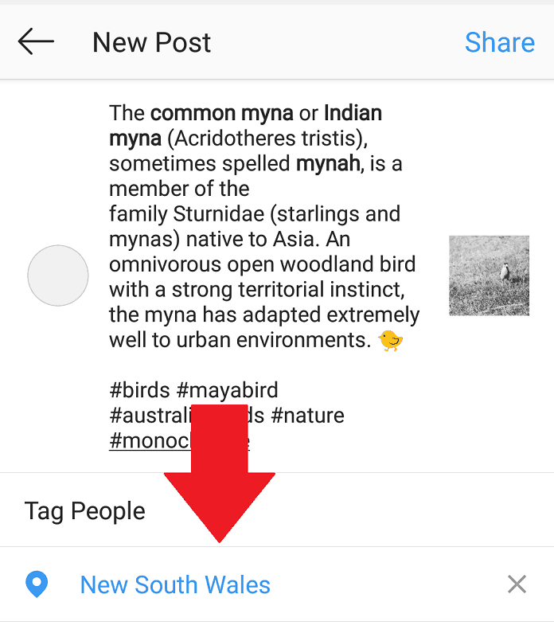
Finally, there are user tags. While their most basic function is to acknowledge other users who may be featured in your photo, they are also another method of reaching out to others on the platform.
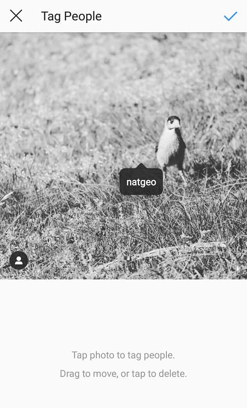
Up-and-coming influencers do this all the time, tagging brands in appreciation for the work or service they provide. If you’re lucky, this could pave the way for future collaborations or long-term business relationships.
Using Instagram Stories
Though a relatively new aspect of the platform, Instagram Stories have blown up in recent times, with nearly 1.7 billion accounts using the feature daily.
As mentioned previously, Stories are a unique way of updating your audience with fleeting musings, behind-the-scenes content, or on-the-go moments in your day.
Courtesy of avrillavigne (Instagram account).
Both photos and videos can be used as Story content, with a wide array of stickers (such as polls) and text options to play with. You can also mention other users and add up to 10 hashtags in your stories, boosting its exposure on the platform.
Story updates are exclusive to your followers and last for up to 24 hours. Viewers you follow can choose to interact with your stories through the “Message” option.
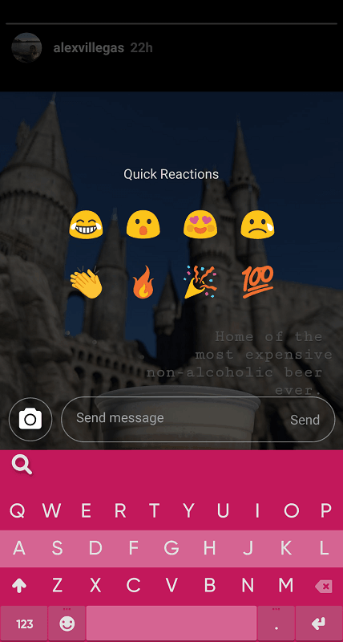
Stories can also be shared via direct message. Simply tap on the paper airplane icon at the bottom of the screen, write an accompanying message, and select the user you wish to share it with.
Courtesy of ashleytisdale (Instagram account).
Using Instagram Live
One of the more personal ways of connecting with your followers, Instagram Live is just as it describes itself; an opportunity to shoot a live video for your fans to tune into.
Users typically use Instagram Live as an engaging way of hosting Q&As, or to personally share important announcements and have a meaningful conversation with followers.
Courtesy of The Verge.
This feature can also be used to stream live events or impromptu adventures. Avengers star Mark Ruffalo, for example, used Instagram Live to document his preparation and arrival at the Thor: Ragnarok premiere in late 2017.
Courtesy of markruffalo (Instagram account).
Got the Basics Down?
For all its generous features, Instagram is a pretty user-friendly app. It’s a tool with no steep learning curve, and when mastered, can reap great rewards – both creatively and financially. Whether you’re looking to build a business or a simple outlet for your passions; those who are content creators at heart need look no further than this innovative social platform.